PedalStock web app · Free
Your pedal parts, in any browser.
Track your inventory, turn a BOM into a build, and see exactly what to order, on any computer or phone. Nothing to install.
Chrome, Safari, Edge and Firefox · Windows, Mac, Linux, iPhone and Android
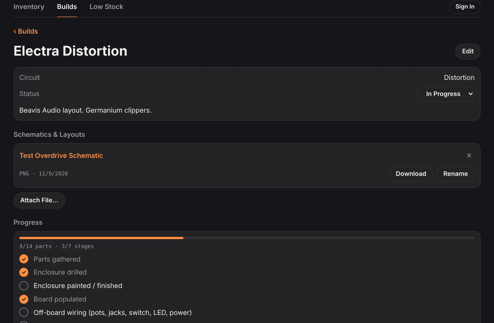
An inventory that knows its parts.
Every part sorted into collapsible categories, each with its own little schematic symbol.
- Capacitors show their value in pF, nF and µF, sorted by value then voltage. Search "22 nF" and find the part you saved as 0.022 µF.
- "1K ohm", "1k" and "1k0" are the same resistor, so imports and checks match them.
- Star the parts you always keep, set a low-stock level, and they show up on Low Stock when they run short.
- Import a spreadsheet as CSV, or add a new order on top of what you have. Templates included.
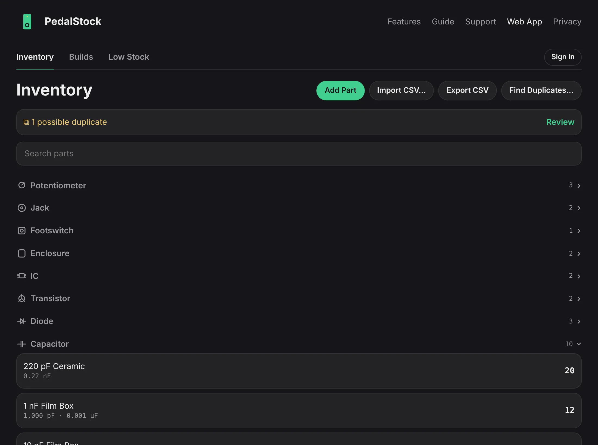
Catch the 10k you entered twice.
Imports and scans can leave you with the same part twice. PedalStock spots them and lets you merge them in a couple of clicks.
- Pick which part to keep: stock is added together and builds switch to the kept part.
- A 16V and a 25V electrolytic, or a film and a ceramic, are never mistaken for duplicates.
- Open any part to see which builds use it and, for capacitors, what you have that can stand in for it.
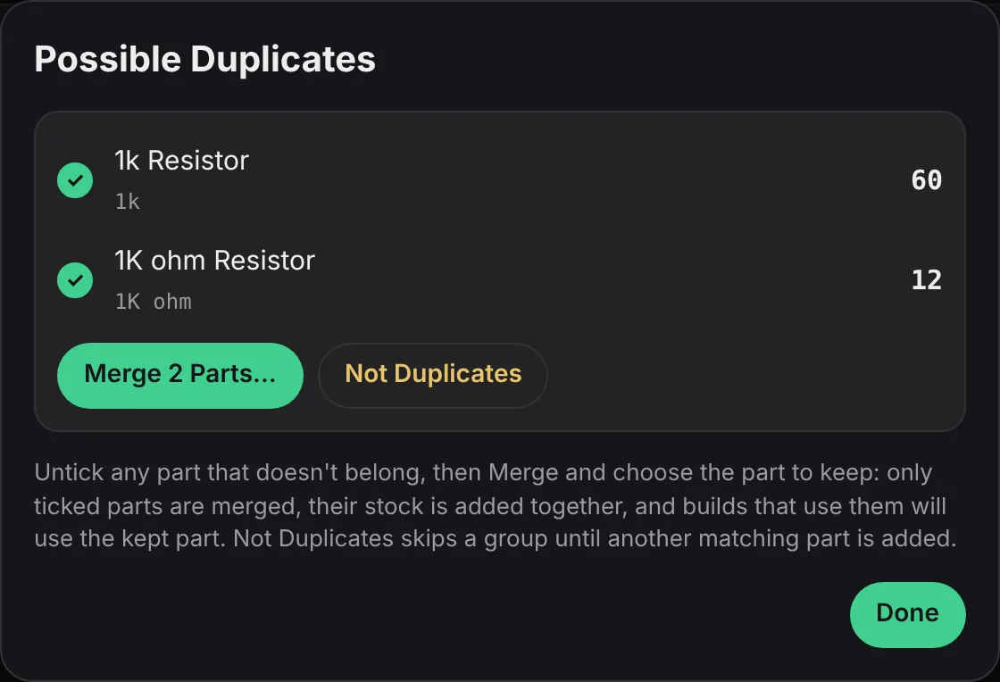
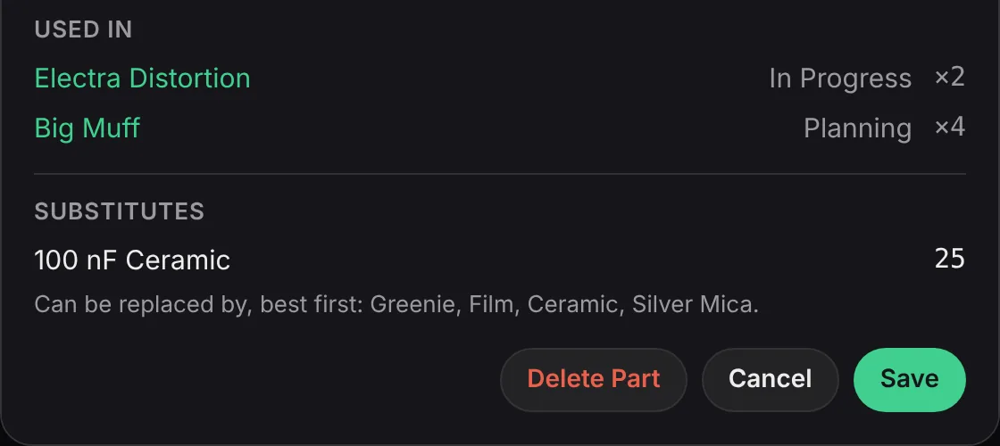
From schematic to build without typing.
Start a build however the parts list reaches you.
- Paste a BOM from a forum thread or build doc: "R1 10k", "C3 100nF", "Q1 2N3904 x2".
- Import a CSV BOM, in PedalStock's columns or the usual Designator, Value, Qty layout.
- Scan a schematic or layout (image, SVG or PDF). Labels are paired with their values, pots named GAIN or TONE included, and you check everything before it's imported.
- Everything is matched to your inventory, and the scanned file is kept with the build.
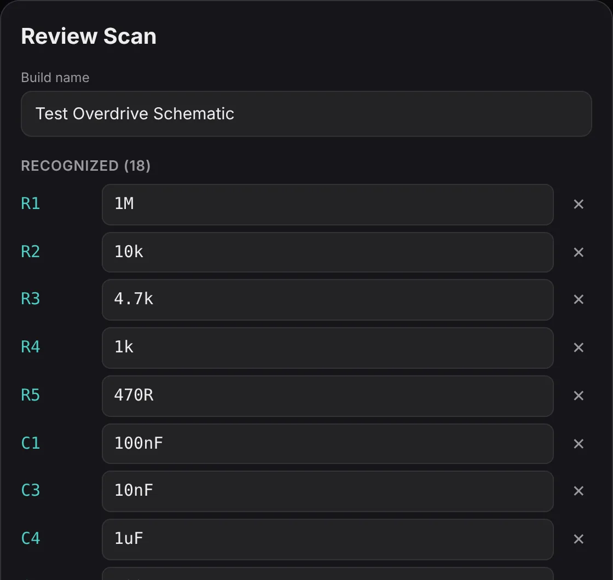
Track the build as you solder.
Tick a part as it goes on the board and it comes out of inventory then; untick it to put it back.
- A progress bar for parts and stages, from drilling the enclosure to final testing.
- Change how many a build needs with − and +, or swap a part for another in one tap.
- Short on a 100 nF film cap? It offers the ceramic you have 25 of.
- Keep the schematic, layout or build doc with the build, and open it whenever you need it.
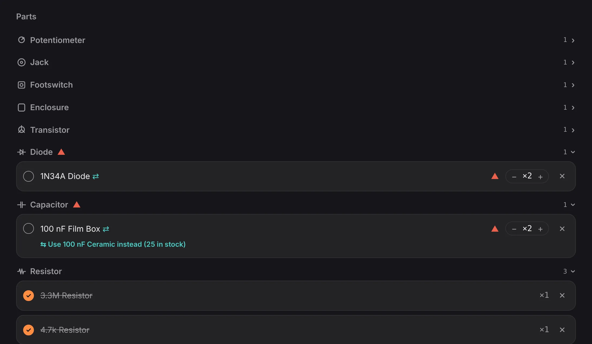
Know what you're short of, across every build.
Build Shortages adds up everything your planned and in-progress builds need against what's in the drawers.
- Two builds needing five of a part when you have eight? You're two short, even though each build looks covered.
- See one pedal at a time with the Build menu.
- Use a part you already have instead: a TL062 for a TL072, any cap of the same value. A note is added to the build.
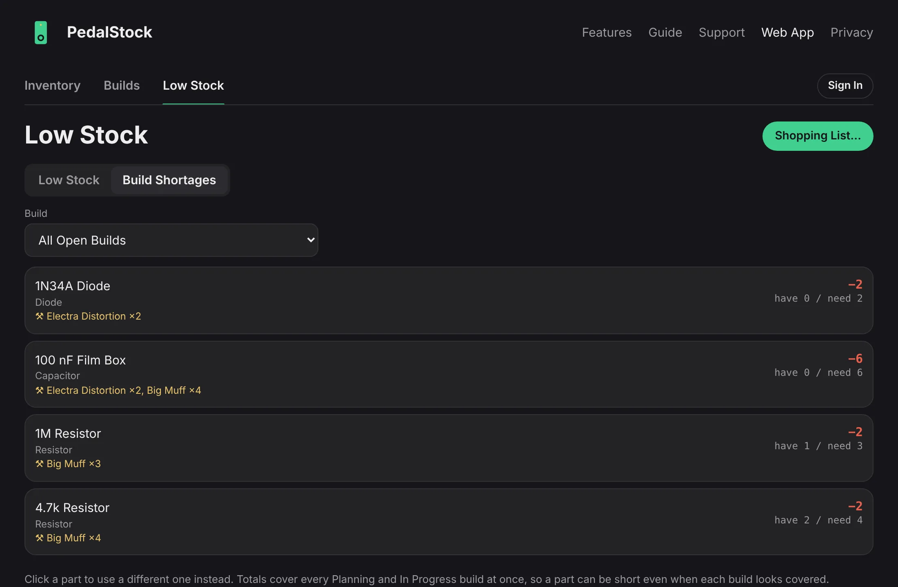
A shopping list you can actually shop from.
One click turns your shortages into a list grouped by category, smallest value first, quantity first on every line.
- Round up to pack sizes (resistors, diodes and LEDs in 10s; capacitors and transistors in 5s), or add one spare of each small part.
- Optionally note which builds need each part.
- Copy it into your supplier's cart notes, or share it.
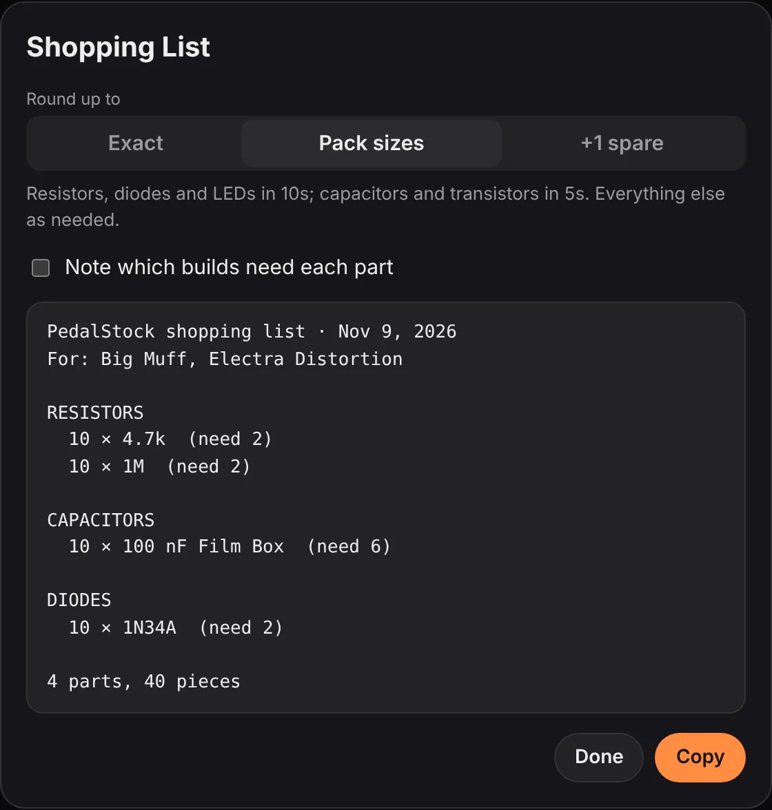
Sign in, and it's everywhere you are.
Signing in is optional. Do it, and your inventory and builds save to your account as you work and appear in any browser you sign in on.
- Continue with Google or Apple, get a sign-in link by email, or use a password.
- Works offline: changes save when you reconnect.
- Delete your account and its data any time. See the privacy policy.
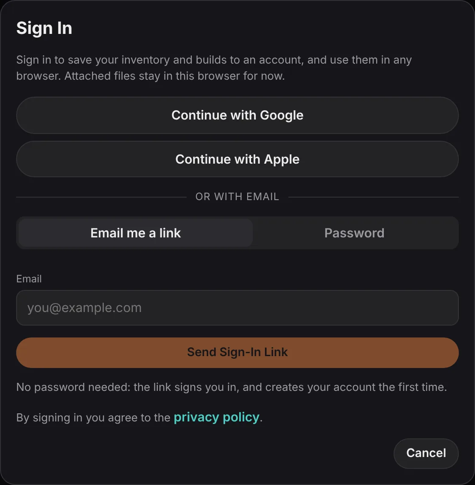
Right there at the bench.
The web app fits your phone, with touch-sized controls for ticking parts and changing counts while the iron heats up.
- Collapsible parts list, progress and stages on one screen.
- Build Shortages and the shopping list in your pocket at the parts store.
- Prefer an app? PedalStock for iPhone and iPad reads and writes the same files.
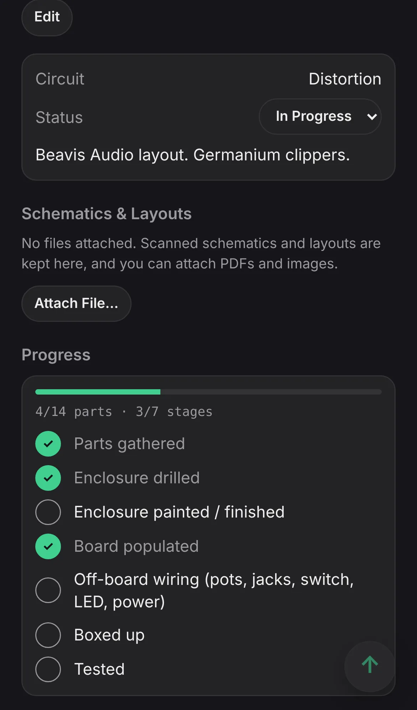
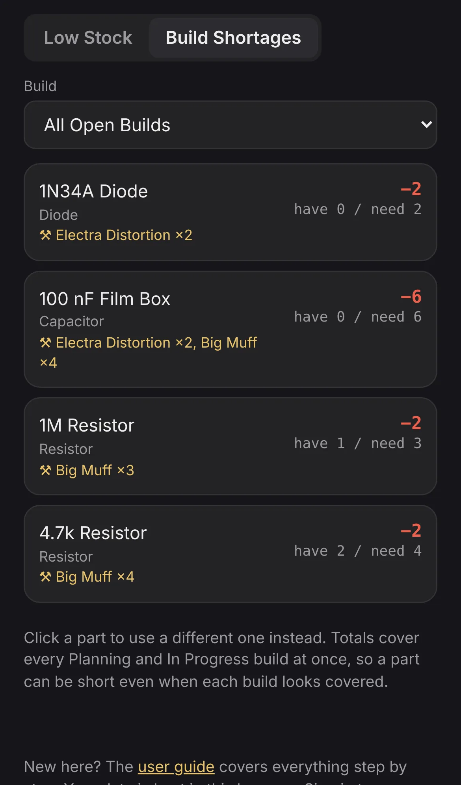
Bring your spreadsheet. We've got templates.
Already keep your parts in Numbers, Excel or Google Sheets? Download a template, paste your rows in, save it as CSV and import it.
Your data is yours to take with you, too: export your inventory as CSV and your builds as a file, any time, and move them between browsers or to and from the iPhone app.
- Inventory template Every inventory column, with example parts.
- Inventory order template Adds a new order on top of what you have.
- BOM template, PedalStock columns One row per part, with category and quantity.
- BOM template, by part label The usual Designator, Value, Qty layout.
- How each column works: File and BOM formats in the guide.
Your parts list, on your terms.
Stays in your browser
Without an account, everything is kept in your browser on your computer. Nothing is uploaded.
No tracking
No ads, no analytics, no cookies. Sign in only if you want your data in more than one place.
Free to use
Open it and start adding parts. No download, no sign-up.